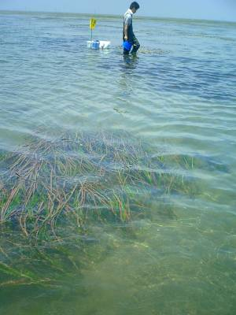
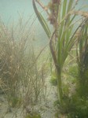
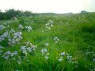
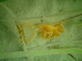
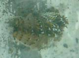
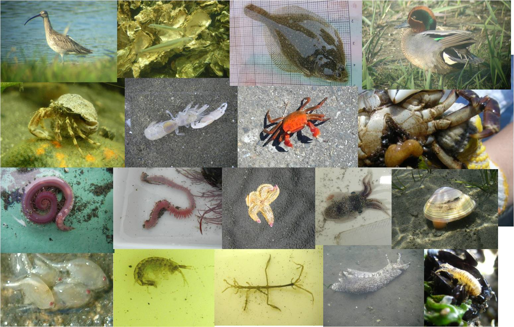
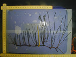
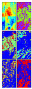
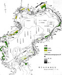
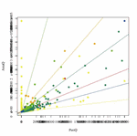

山北 剛久のページ
=> english home;
Mechanical Translation
更新はまれですがTwitter、 Blogもあります。
英語論文一覧：入手困難な場合はご連絡ください。（Research gateに一部あります。）
■所属：
国研）海洋研究開発機構 地球環境部門 海洋生物環境影響研究センター 海洋環境影響評価研究グループ
過去または兼任先の所属
海洋研究開発機構 海底資源研究開発センター 環境影響評価研究グループ,
広島大学 大学院 生物圏科学研究科 環境循環系制御学専攻 客員准教授、
上智大学 大学院 地球環境学研究科 非常勤講師、
海洋研究開発機構 生物多様性分野、
水産総合研究センター 瀬戸内海水産研究所 環境動態グループ 研究支援職員、
東京大学 東京大学 農学生命科学研究科 生物多様性科学研究室 特任研究員、
森林総合研究所 昆虫生態研究室 非常勤研究員、
学振特別研究員、千葉大学 学生
■■■■お知らせ■■■
日本生態学会において、自由集会を開催します。
W19 2023年3月20日 17:00ー18:30
「LT of LT：長期観測・時系列データ、ライトニングトーク」
■生物の自動抽出とリモートセンシング
近年のディープラーニングのリモセンへの活用の進まなさに歯がゆい思いをしており、しばらく忙しくて封印していた画像解析を再開し、以下を発表しております。
→2020年追記、どんどんリモセンでも活用されるようになってきました！
- 「Application of deep learning techniques for determining the aerial extent and classification of seagrass beds, Trang, Thailand 」[Bot Mar],[draft]
深層学習の画像画像変換を用いて、白黒画像からアマモ場を高精度で抽出しました。変化が少ないと思われたタイの保護区内でも河口の変化を通じた藻場の変動がわかりました。
- 「深層学習で海底の特徴を自動分類 して分布図を描く 特集 Innovation」
[Blue Earth]
職場の広報誌で、上記のタイの藻場のリモートセンシングや、下記のクモヒトデの自動抽出など最近の仕事を少し紹介していただきました。
- 「2018生態学会自由集会 ：画像認識・分類技術の生態学への応用と課題」 ～特に機械学習，深層学習を中心に；演者の発表資料へのリンクあり
- 「Image dataset of ophiuroid and other deep sea benthic organisms in 2015 extracted from the survey off Sanriku, Japan」
震災後の調査で取得した画像からクモヒトデ類を切り出した生物抽出の教師用データを手作業とOpenCVをの組み合わせによってまとめました。これによって精度の高いクモヒトデ抽出モデルができることが期待されます。
[Ecological Research;Open Access]
■生態系サービスの評価
生物多様性条約の科学助言機関であるIPBESの主に国内対応を行う研究プロジェクト(PANCES)にて、海のグループの幹事等を行い、以下を発表しております。
- 「海の歴史と未来 シリーズ「人と生態系のダイナミクス」
石器時代から現代までの海の利用と自然の仕組みについて、時代も分野も超えた本を水研の堀さんと書きました。なかなか勉強になりましたが、苦労しました。
[朝倉書店のサイト]
- 「Impact of the 2011 Tohoku Earthquake on the Use of Tidal Flats: a Case Study in Inner Tokyo Bay 」
東京湾三番瀬において、震災後前後の干潟の利用者の数と不安な点についてのアンケート、現地調査をまとめました。潮干狩り利用者は大きく減少し干潟の生態系サービスの観点から災害が与えた影響は大きいことを示しました。
[Journal of Environmental Information Science]
- 「Cultural Ecosystem Services of Temperate Coastal Areas of Japan: Uses of Tidal Flats, Sandy Beaches, and Rocky/Coral Areas」
日本における海水浴、潮干狩りの歴史と、ダイビングの分布と変動についての検討の経過をまとめました。
[8th Asian Wetland Symposium 2017 PROCEEDINGS]
- 「干潟・砂浜・サンゴ礁、多様な沿岸景観ごとの文化的サービスの分布とその変動」
海水浴、潮干狩り、ダイビングの分布と変動について研究経過をまとめました。サービスの時間変動が大きいことを示しました。
[第17回東京湾シンポジウム報告書]
■生物の分布推定と生物多様性評価
東日本大震災後の海洋研究プロジェクトや、生物多様性条約COP10の愛知目標対応のプロジェクトにおいて、生物の分布推定モデルや、保全優先度についての検討を行ない、以下を発表しております。
- 「東日本大震災後の海の変化を知る -地理情報システムの活用と地理情報科学(GIScience) 」
震災後の調査とデータの解析全体と今後の展望をまとめました。色々書いてありますが、もともと紙の書籍になる予定だったので長いです。
[e-種生物学研究]
- 「Temporal dynamics of brittle stars in continental slope off Otsuchi Bay, Northeast Japan after the earthquake 」
震災後の海底でクモヒトデの連続観測を行った結果について、時間変化が連続的で過去の成長量と差が小さいことと海底の連続観測の可能性についてのべました。
[PBRに再投稿]
- 「Distribution of the marine debris on seafloor from the primary report of five cruises after the Great East Japan Earthquake 2011」
震災後の瓦礫は深海域では谷に多いとの速報を複数の航海を比較する形でまとめました。
[書籍],[関連発表]
全国の沿岸の生物多様性の推定
- 「Identification of ecologically or biologically significant areas (EBSAs) in the East to Southeast Asia region and comparison with established marine protected areas.」
アジア全体での重要海域と現状とのギャップについてプロジェクトのメンバーと一緒にまとめました（主に北大の須藤さんが解析）。
ギャップにはデータの入手可能性の他に着目している観点が保護区と重要海域で異なる部分があることがわかりました。
また、組み合わせ最適化をおこなうMarxanを用いた重要地域の基準の統合に対して、どの程度データの誤差が影響するのかを検討しました。
[論文誌],[著者原稿,付録],[ポスター]
- 「アジアの海洋生物多様性 評価,海の生態系サービス評価の現状」
上記の論文の要約と生態系サービス評価の今後の展望との関係について、意見論文を執筆しました。
[論文へのリンク],[タイトル]
- 「Identification of important marine areas around the Japanese Archipelago: Establishment of a protocol for evaluating a broad area using ecologically and biologically significant areas selection criteria.」
日本近海での重要海域選定方法について環境省のプロジェクト全体の議論の結果をプロジェクトの皆さんの協力の下まとめました。
[論文誌(OpenAccess)]
[関連発表]
- 「Landscape mosaicness in the ocean: its significance for biodiversity patterns in benthic organisms and fish.」
景観のモザイク性と沿岸の生物の多様性との関係について相加効果と相乗効果がある可能性を既往研究を元にまとめました。
[ポスター]
[英文書籍へ]
[海洋と生物での解説]
瀬戸内海の沿岸の藻場分布の抽出
- ALOSの衛星画像を用いたアマモ場の分布の抽出を行いました。
また、藻場と魚の分布の関係性を検討しました。[堀ら （漁場環境・生物多様性保全総合対策委託事業・内海域における漁場環境診断手法の開発）1・2・[海洋と生物]
全国の流域のデータベースと沿岸のデータベースをGISで解析
- 「Quantitative effects of terrestrial and oceanic factors on the nationwide distribution of seagrass and Sargasso beds at two different river basin scales. 」
アマモ藻場の分布と森林率とに関係があることを全国の流域データベースを活用して示しました。陸域の環境要因の影響は特に小流域で有意でした。またガラモ場の分布には温度が強く影響することが明らかになりました。[再投稿中]
- 「特集 生物多様性条約/COP10に向けて 森林と川や海とのつながり」 山林 (1515), 17-24,
森林から海に与える影響についてのレビューを掲載しました。図書館またはメールにてリクエストお願いします。
- 「生物多様性条約第10回締約国会議の現場」 海外の森林と林業 (81)
COP10の現地での様子についての報告を掲載しました。[記事]・COP10については[参加者ガイドの手引き]がおすすめです。
・博士課程までの研究テーマ：
千葉大学 理学研究科 群集生態学研究室：東京湾における海草藻場の長期時空間動態
航空写真によるリモートセンシングおよび、GIS(地理情報システム)を用いて、 東京湾富津干潟の1950年代からのアマモ場の変化を追いました。 詳しくは論文をご覧下さい。
- Asynchronous local dynamics contributes to stability of a seagrass bed in Tokyo Bay;[Ecographyのサイト][ドラフト]
- メタ個体群動態やネットワークの分野で研究が進む「非同調性～安定性関係」が局所でも有効かを検証し、
アマモ場の中の場所間の変動が同期していないことが、アマモ場全体の変動の過去25年間の安定性に寄与していることを示しました。
変動には特に波当たりと漂砂の変動が影響していたと考えられ、アマモ場の保全のためには、広域の藻場の維持と複数の要因が働く環境（地形など）を維持することが重要と考えられました。
- Scale dependency in seagrass dynamics: how does the neighboring effect vary with grain of observation
[Population Ecologyのサイト]
[ドラフト]
- アマモ場の各地点のアマモの増減について、隣にアマモの植生が多いほうが、翌年アマモが増加しやすい/減少しにくいことを格子モデルの置換行列を用いて示しました。
この隣接効果の強さは解像度によって変化することも明らかにし、藻場の変動をとらえるために最適な解像度がわかりました。
- 東京湾富津干潟における海草藻場の長期空間動態 [保全生態学研究][千葉大学のサイト]
- 富津干潟の長期変化をとらえ、1970年初頭に東側が埋め立てされた後に大きく減少したあとに一時回復したこと、1992年ごろに分布が減少した後は比較的安定していることがわかりました。
ライプニッツ海洋科学研究所：GAMEプロジェクト
- Re-Structuring of Marine Communities Exposed to Environmental Change: A Global Study on the Interactive Effects of Species and Functional Richness [Dr.Wahlらによる発表]
- 生物多様性が群集の安定性に寄与するかについて、東京湾奥部で別々の場所の付着生物を移植する野外実験を行いました。
ムラサキイガイが一面についた場合はもちろんでしたが、その他の生物についても、若くて多様性が低い群集ほどもろく
移植後に変化しやすいことがわかりました。各国の比較から、単純に多様性ではなく機能の多様性が群集の安定性に影響していることがわかりました。
・調査地紹介：千葉県富津干潟
モニタリングサイト1000の対象地でもある富津では、1970年代からの航空写真や2000年代からの現地踏査データがあり、様々な研究者が、植生の変動やベントス、魚類の調査を行っています。データの蓄積があることから、様々な技術のテストや、指標の参照点として使うことができます。
|
富津干潟の様子
|
 |

アマモとコアマモ |

ハマダイコンの群生 |

メリベとミノウミウシの仲間 |

干潟の生き物 |
|
富津干潟には100ha以上にわたる東京湾最大の藻場が今も残っています。近くには天然記念物に指定された海浜植物や遺跡、照葉樹林などがみられ、外湾と内湾を隔てる砂洲は地形的にも大変興味深い場所です。
|
?
・データ解析：GIS
得られたデータはGIS上で重ね合わせ、さらに文献で収集した過去の情報や、成長量の計測などとあわせて、藻場の空間動態の長期間にわたる変動を解明するべく、解析します。
|
GISとは？・・・地理情報システムと呼ばれる、パソコン上で画像や位置情報を持った統計値を扱うシステム。カーナビやエリアマーケティングに近年応用されている。
|
解析中のデータの様子
|

コアマモの成長量の計測中 |
50m*100mのマッピングによって作られたラスターデータ |

明治時代の東京湾の藻場。過去からの変遷を探る。 |

Rによるデータの解析。
ベクター化したデータから値を抽出してグラフ化。 |
・その他
なにかあれば更新します。
・自己紹介：
本名： 山北剛久 YAMAKITA, Takehisa
出身： 千葉県
好きなもの：
散歩・自然観察・市民活動
生き物： コアジサシ、ガマ
場所： Wetland。特に尾瀬、三番瀬など
食べ物： フォー、シーフード
お勧めの本： 複雑系(MMワールドロップ)、自然保護という思想（沼田真）、センスオブワンダー（レイチェルカーソン）
最近運動不足でホッケーがしたいです。
2022年度の様子：4月小学校・カメラ制作、5月熊本大学・JPUG、6月モニ1000、7月コロナ、8月予算応募、9月PB学会シンポ・駿河湾航海、10月東京湾シンポ・APMBON MTG、11月GOBIMTG・コロナ、12月駿河湾航海、
2021年度の様子：4月本が出版、5月推進費報告作成、6月JPGU、モニ1000 5年毎調査、7月論文執筆、9月PB学会、10月小笠原沖航海、11月AOGEO、原稿書き、和歌山、12月カメラ検討、1月気候変動解析、2月UN Decadeシンポ準備、3月OSM・ESJ・UN Decadeシンポ
2020年度の様子：4月部署のテレワーク準備、5月書籍修正、7月保育園開始、モニ1000、8月OHI計算など、10月書籍校閲、11月小笠原沖航海、12月推進費AD会合とりまとめ、
2019年度の様子：4月 福井恐竜博物館、5月書籍執筆、国際甲殻類学会香港、6月富津調査、AP-BON KLP 7月IGARSS、UN Dicade 8月GOOS、形質論文、出産、9月PB学会10月実習、女川、11月AOGEOSS、AD会合準備、12月、書籍執筆、2月-コロナ、保育
<<< 直前に戻る
{kind=link}
![[ポスター]](images/20131107PB_poster_3k70_R.jpg){kind=link}